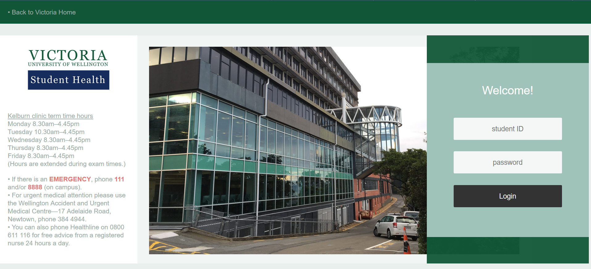
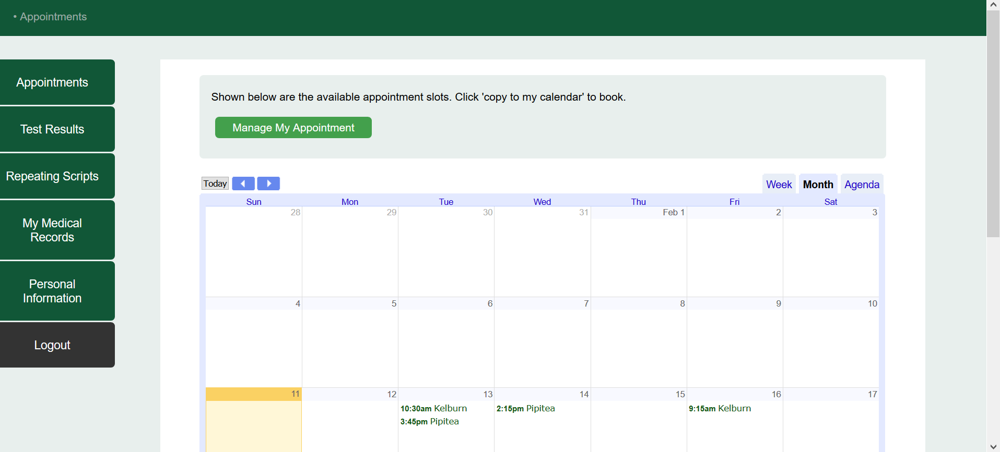
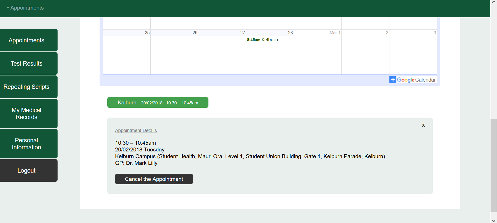
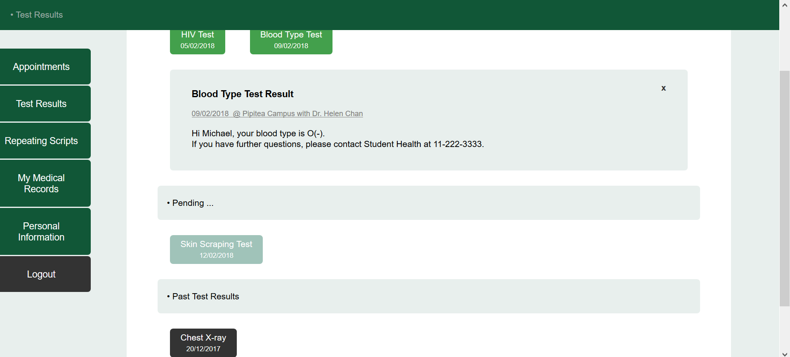
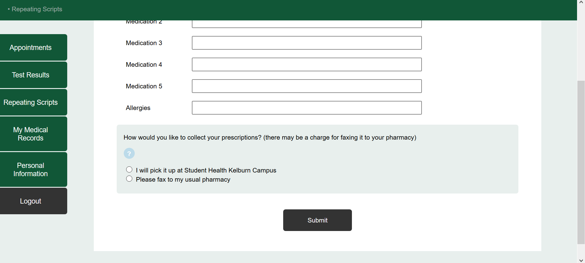
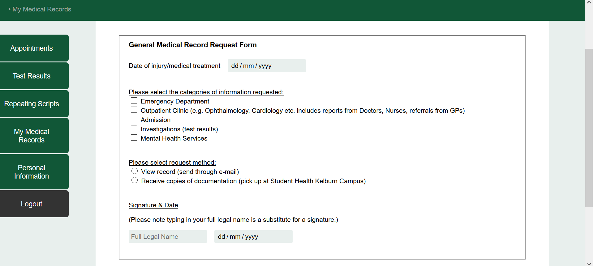
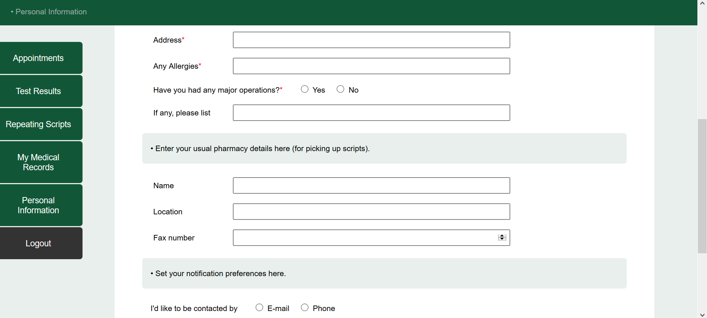

The main focus for this project was to create an easy-to-use patient portal with simple, clean layout.
Considering the needs and goals of the targeted users, who are Victoria students and particular those who are sick,
I managed to avoid any complexity, distractive elements or disruptions that may increase the stress level of the students.
The website was targeted at a minimalism style for the purpose and with necessary micro interactions added to enhance the overall quality of user experience.
User Testing & Feedback
I did extra user testing with the same tasks in order to gather more feedback regarding the website in progress. The findings are as follows:
1. It would be better if the colour scheme is consistent with the official Victoria website’s colour, as it is part of the university service.
2. [Test Results] It would be easier for users to see the test results if they are listed in chronological order (specific date indicated, most recent on top) instead of using the current categorization (available/pending/past).
3. [My Medical Records] It is hard to do a signature online. Maybe uploading digital one/submitting form would be better.
4. [Appointment Page] Make My Appointment/Queuing sections fixed position on screen instead of being able to move around. There is no point for them to move around.
Iterations
Based on the findings from user testing, the following iterations were made:

As the previous login page was quite plain, I added a few design elements to make it look more refined as a page,
including a photo of the Kelburn clinic building, logos of Victoria and Student Health, sticky bar on top as well as some relevant information.
The photo was taken by me. All other assets were created by myself in Illustrator/Photoshop.
To make the overall style consistent with Victoria University, I picked the colours from the official sites and applied them here.
The iterations focused on creating a better layout, clearer structure as well as credibility.


For the appointment page, my iterations focused on functionality mainly.
Instead of creating a calendar look, I integrated a Google Calendar for appointment booking.
The advantage of Google Calendar is that the students could sync the events (appointment details) to their own calendar.
It is more convenient and the reminder function is once more enhanced. However, the available slots were only shown in month February for demonstration purpose.
Another major change involves the display of Appointment Management.
I realized it is more efficient for both students and website management without the queuing function.
Once a student canceled his/her appointment, the slot appears on the calendar as available. Instead of trying to line up as many queues as they can,
students who are looking for a slot will only focus on the available ones. It is clearer to show only the available ones on the calendar instead of showing
all slots in queue, which appears to be overly distractive.
Also the My Appointment section was changed to a fixed position under the calendar instead of being able to move around.
It is easy to get to the section as there is a 'manage my appointment' button on top which leads users directly to it.
Users could cancel the appointment in the section and rebook another one on the calendar.

I didn't make it a chronological list display because the test results in the pending/past sections won't be able to open.
For the past test results, students would need to make a request before seeing it as it belongs to personal medical records.
While for the pending section, test results aren't available yet but users would still want to have the knowledge of what test results they are waiting for.
So concerning the feedback of chronological order, I added the dates of the individual tests on the tab so users would have clear information on the chronological aspect.
Also users now can close the result window after seeing it.

As users were a bit confused about giving information of 'usual pharmacy', I added an inline help tool to assist.
It explains that the users could fill in the pharmacy details in the personal information section.

For the form, my iterations focused on fixing bugs. I adjusted the width/size of the checkbox and radio button to make them work properly in Chrome, as they would only show up in Firefox before.
I used the inspect tool to figure out the causing problem and made a few tries before eventually fixing it.
Also I fixed the date panel which now allows users to choose a date up to today.
Other than that, I added a line which indicates the signature would be in typed form, instead of a real handwritten signature.
I was thinking about adding a sectiom where users could do signature with the mouse or touchpad, however I figured it would be hard to do a proper one without a pen.
So to avoid potential problems, I kept it the typed form.

There wasn't much problem regarding this section. However I added red * to indicate compulsory fields for users to fill in.
In this case, students wouldn't be unnecessarily filling all the sections when they don't need to.
Future Opportunities
1. While the integrated Google Calendar could serve the booking function, a professional appointment booking calendar tool would make the process and management a lot easier.
For example, BirchPress Scheduler is a comprehensive booking tool that also allows Google Calendar sync.
It is designed for clinic scheduling and is supported in muti-language.
2. The Student Counselling service could be added to the service as well, givien both have the similar status quo and booking procedure.
It would not only solve the problem of student physical health issues but also mental health issues, which are equally important.
3. The online health portal could be integrated with the existing Student Health page to become one comprehensive, consistent website.
It is more convenient when all relevant information are gathered together instead of being spread out in different places.